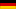
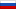
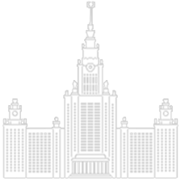
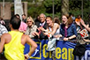
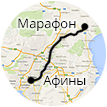
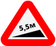
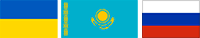

Стартовый взнос
|
Нью-Йорк |
377 $ |
|
Бостон |
150…300 $ |
|
Чикаго |
175…200 $ |
|
Лондон |
100 £ |
|  |
Берлин |
60…110 € |
|  |
Москва |
1000…2000 |
Динамо бежит!
Во время уличных пробежек бегунов часто спрашивают, бежит ли Динамо.
На этот раз ответ — да!
2:03:38
мировой рекорд у мужчин, 2:15:25 — у женщин
5000 л воды
выпили марафонцы на дистанции
+230 м
суммарного подъема — это 77 этажей или высота ГЗ МГУ со шпилем


182 волонтёра
и сотни болельшиков поддерживали бегунов
За 2-3 дня до марафона спортсмены переходят на высокоуглеводную диету:
пасту, крупы и фрукты
≈ 2000 ккал
сжигает марафонец за время забега

«νικῶμεν!»
или «Мы победили» — последние слова греческого воина Фидиппида, прибежавшего в Афины с поля боя близь Марафона и положившего начало марафонской традиции

5,5 м на км
составил уклон на трассе, превысив олимпийский
максимум в 1 м на км

На 40–60 с
ухудшаются результаты при повышении температуры воздуха на 1°С
350 000
в награду за первое место и медали всем финишировавшим

Первые места заняли спортсмены
из Украины, Казахстана и России
В марафоне участвовали спортсмены со всего мира: из Парижа, Лондона, Токио, Риги, итальянского городка Кастровиллари, Роттердама и Бангкока.